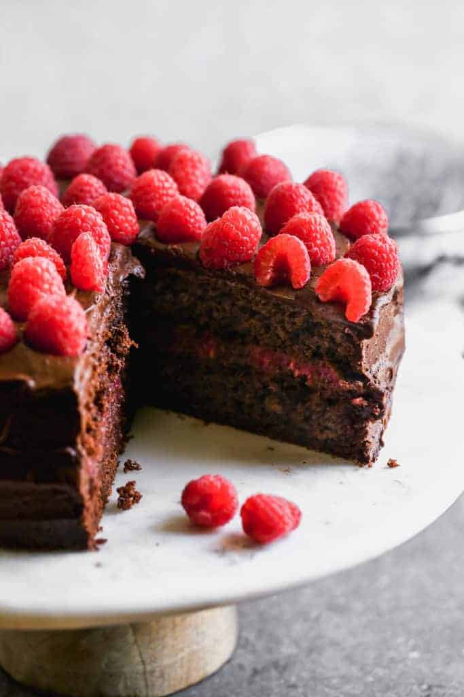

Classic Chocolate Raspberry Cake Recipe
Ingredients:
- 1 ¾ cups all-purpose flour
- ¾ cup unsweetened cocoa powder
- 2 teaspoons baking soda
- 1 teaspoon baking powder
- ½ teaspoon salt
- 2 cups granulated sugar
- ½ cup vegetable oil
- 2 large eggs
- 1 cup buttermilk
- ¾ cup boiling water
- 2 teaspoons vanilla extract
- 12 ounces fresh raspberries
- 1 ½ tablespoons cornstarch
- 2 tablespoons lemon juice
- ¼ cup granulated sugar (for raspberry filling)
- 12 ounces bittersweet chocolate, chopped
- 1 cup heavy cream
- 1 tablespoon corn syrup
Instructions:
- Preheat the oven to 350°F (175°C). Grease and line two 8-inch cake pans.
- Sift together flour, cocoa powder, baking soda, baking powder, and salt.
- In a separate bowl, whisk sugar, oil, eggs, buttermilk, and vanilla.
- Gradually mix dry ingredients into wet ingredients, then stir in boiling water.
- Divide batter between pans and bake for 30-35 minutes. Let cool completely.
- Blend raspberries, cornstarch, lemon juice, and sugar in a saucepan over medium heat until thickened. Cool completely.
- Heat cream until steaming, then pour over chopped chocolate. Stir until smooth.
- Layer cake with raspberry filling and chocolate ganache. Frost the outside with ganache and decorate with fresh raspberries.